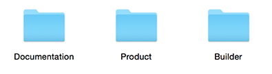
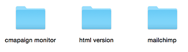

Inside the download package
You will find inside the download package 4 folders:

1 - Product folder contains 3 folders:

2 - Builder folder contains the file that will redirect you to our online builder where you can customize your template, in the next section you will find a step by step video tutorial to show you how to use our builder
CastelLab Builder
Our builder is just a bonus to help you customize your template. You can edit text, images, colors, background images, background colors, you can also drag and drop, duplicate or remove sections.
Click on the video bellow and watch how to use CastelLab email builder (Please be patient it may take some time to load).
Notes :
- You don' have access to the main builder files, you can only use our builder online.
- To edit images inside the builder you must host your images in your server and past the links into
the image popup (the video tutorial shows this process).
- You can't resubmit your file to the builder after you download it, you have to start from the beginning, if you want to customize your template many times and save your progress you can use mailchimp or campaign monitor or any other email service provider, our templates are fully compatible with mailchimp and campaign monitor
Integration with email services
Our templates are fully compatible with mailchimp and campaign monitor
Click on the video bellow and watch how to setup your template in mailchimp.
Notes :
If you use the mailchimp version from our builder, you must keep the sections you want an remove the
sections you don't need, because you can't do it inside mailchimp editor.
Click on the video bellow and watch how to setup your template in campaign monitor.
Notes :
If you use the campaign monitor version from our builder, you must keep the sections you want an remove the sections you don't need, because you can't do it inside campaign monitor editor.
If you are using other email service than mailchimp and campaign monitor, you can use the HTML version included in the download package, just copy and past the HTML code into your email code editor.
Help and Support
Technical support is only provided via email, we can't give you support anywhere else. If you need any help please make sure to contact us from here
Notes :
- We give support only for template issues.
Feedback
Your feedback is very important to us, we take seriously what our customers think, please give us some feedback if you have some ideas to improve this template, we would love to hear from you.
Please if you like the template rate it from here.